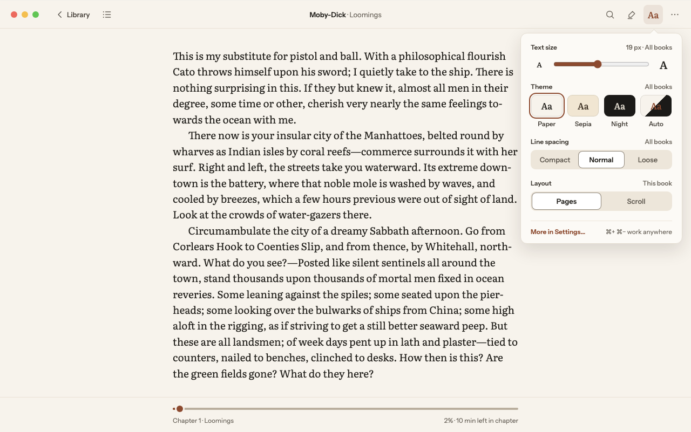
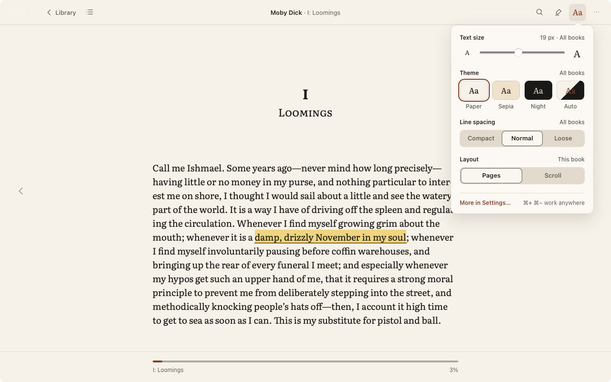
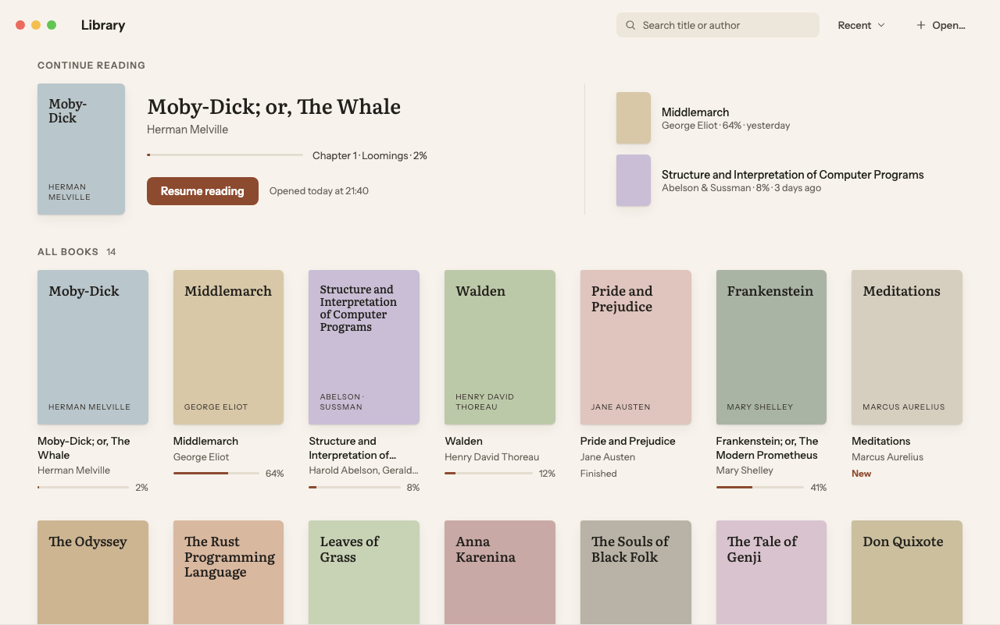
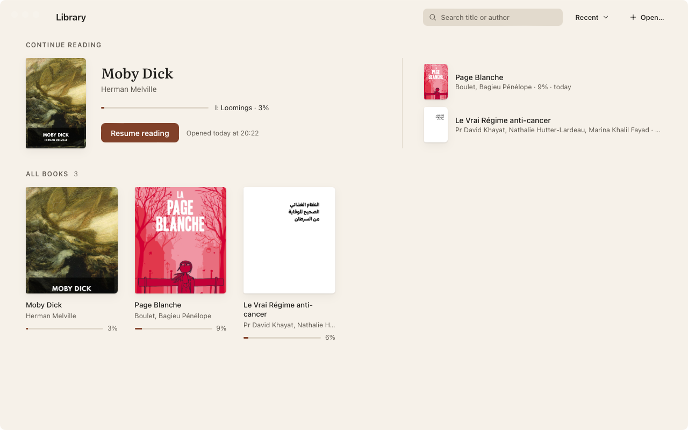
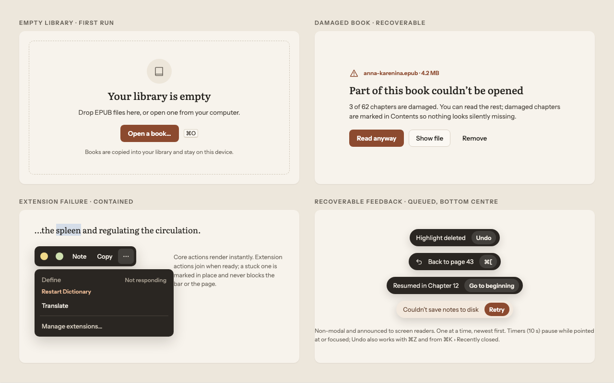
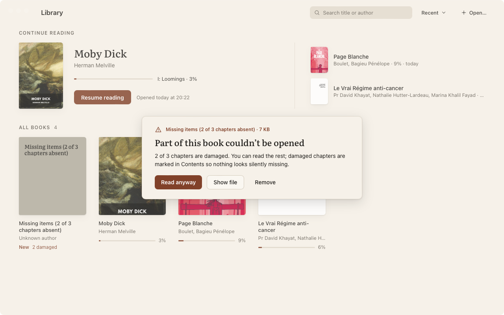
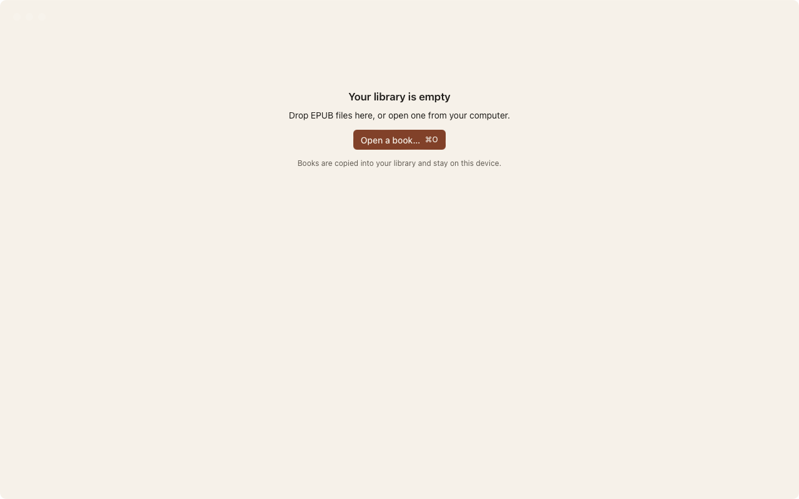
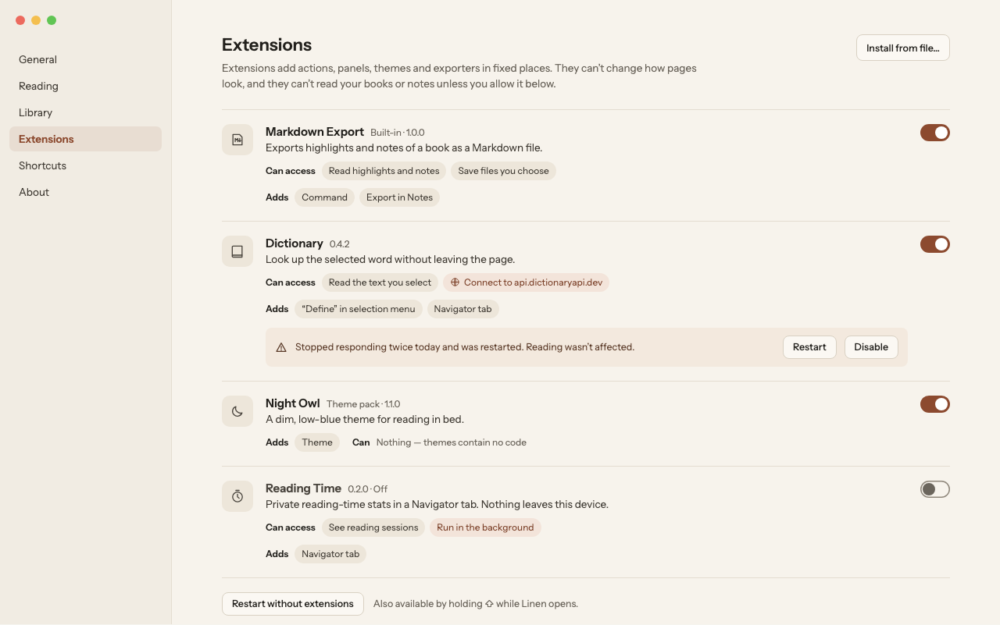
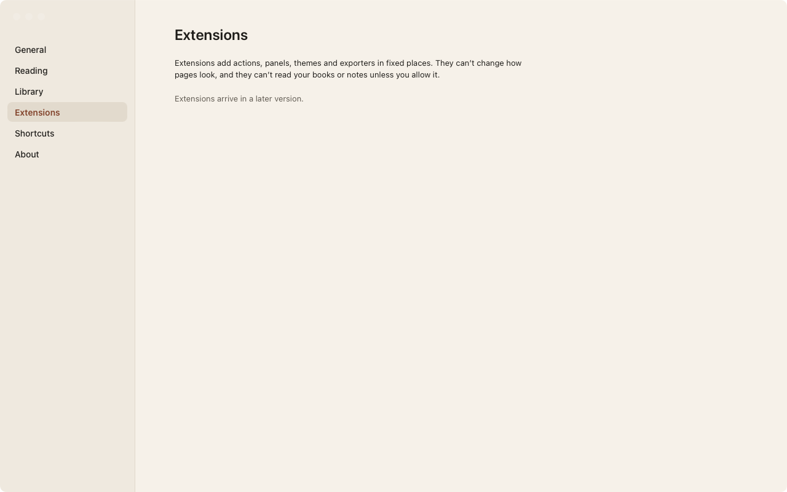

Phase 6 review: settings and library
Each mock (left) beside the app, 1280 × 800, captured from the app's own window on the reference Mac (WebKit 19618). The library holds the visual spike's three test books, not the mock's fourteen. Approving makes these captures the Phase 6 baselines (item 19). decide marks the provisional designs in items 14–18.
Screen 09 — Reading settings (Aa)




- Matches the mock:
- a 300 px popover under the Aa button, which is tinted while open;
- Text size with “19 px · All books” and the slider in the twelve L4 steps;
- the four theme swatches, each in its theme's own colours;
- Line spacing and Layout segments, each row naming its scope;
- “More in Settings…” and “⌘+ ⌘− work anywhere”.
- decideG12, not shown here: books over 30% code or tables get “Much of this book is code or tables. Scroll may read better.” For fixed-layout books, size and spacing give way to one line of explanation. Both are tested (L18-E2-aa-hints).
Screen 01 — Library




- Matches the mock:
- the header with search, sort (Recent) and Open…;
- Continue reading: the current book large, with its chapter, progress, Resume reading and “Opened today at …”, and the next two small;
- All books with its count;
- tiles with the cover, a two-line title, the author, and a progress bar with % (or New / Finished).
- expectedThese test books have real covers. Books without one get a generated cover in Screen 01's tints, with the title and author set on it (tested for ≥ 7:1 lettering).
- decideThe item menu (right-click, or a ⋯ that appears on hover and focus) and Remove with Undo (G4, item 15).
- later phaseThe 240 ms cover-grow into the book (item 20).
Screen 12 — Damaged book




- Matches the mock's card: the warning line, “Part of this book couldn't be opened”, how many chapters of how many, and Read anyway, Show file and Remove.
- expectedIt opens over the library as a modal when the book is opened, until Read anyway.
- expectedThe warning line names the book's title and size. The original file name is not kept, because books are copied into the library.
Screen 12 — Empty library


- Unchanged since Phase 1: the title, the drop target, “Open a book… ⌘O” and the note.
- expectedThe mock's book icon in a circle is not drawn (as in Phase 1).
Screen 11 — Settings (the shell)




- Matches the mock's frame: the sidebar (General, Reading, Library, Extensions, Shortcuts, About) with the selected section in accent, the section title, and the extensions intro.
- later phaseThe extension list, Install from file… and Restart without extensions arrive in Phase 7.
- decideThe contents of the other sections are G2's proposal (item 17).